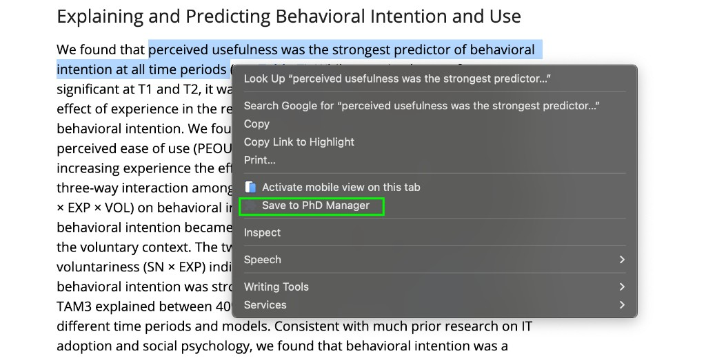
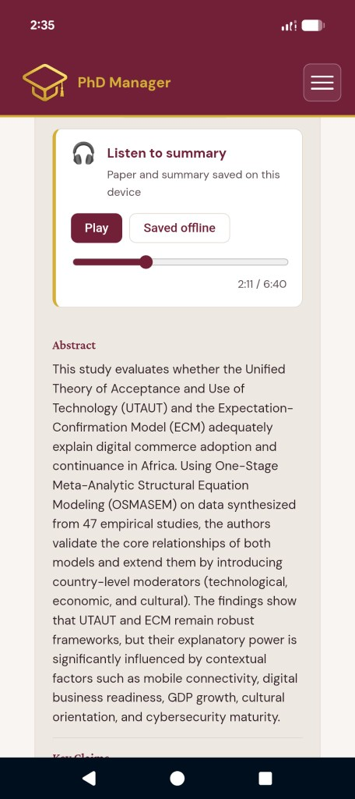
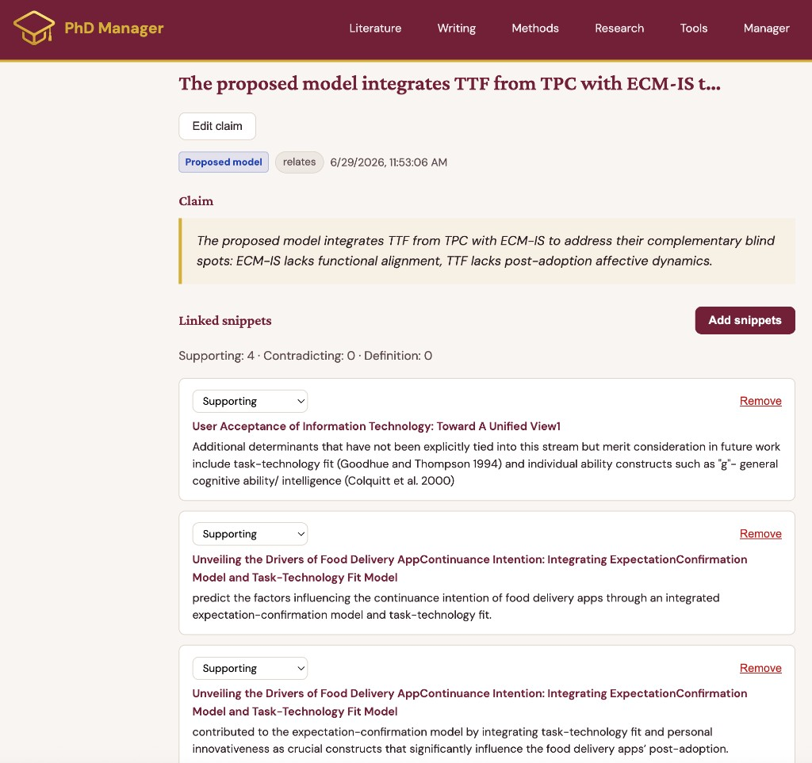

Organizing research one snippet at a time, so doctoral students walk into the writing phase with their thinking already done.
Context
PhD Manager is a product I conceived, designed and built from scratch. It started from a workflow problem I ran into directly and has since grown into a full product suite. It is now piloted with faculty at Stellenbosch Business School and was awarded second place out of eight finalists at the IDEA SMASH 2026 innovation competition.

Problem
Doctoral research is not a linear process. A student reads a paper, captures a quote, follows a citation, checks whether that source is already in their library, gets an idea for a section, and only then returns to the paper they started with. Every switch costs context, and insights get lost along the way.
Today that work is spread across reference managers, PDFs, notebooks, spreadsheets and generic tools like Notion. None of them understand the core objects of theory-driven research: models, constructs and the claims built on them. Students end up re-reading dozens of papers to find the one line they remember, and supervisors have little visibility into progress beyond the next status meeting.
Solution
PhD Manager is a purpose-built workspace that connects every piece of a thesis into one structure:
- Paper
- Snippet
- Construct / Model
- Claim
- Writing
The product suite has three parts:
- Core platform: a web dashboard for papers, a visual theory map of models and constructs, a snippet repository, claims, a task board, diary and meeting notes, all shared with the supervisor.
- Snippets browser extension: highlight text on any page or PDF, right-click “Save to PhD Manager”, and it is linked to the right paper, construct and model in seconds. If the paper is new, it is created automatically.
- Mobile companion: an installable PWA with AI-narrated audio summaries of papers, saved for offline listening, so the literature review moves forward during a commute.


Snippets combine into claims, and claims feed the writing phase. Writing becomes assembling an argument from evidence the student has already organized, rather than starting from a blank page.

My Role
As founder, I own the product end to end: vision, strategy, roadmap, architecture and the build itself. I mapped the real research workflow step by step, including all the moments where it breaks, and turned that into a clear object model and a set of product principles, such as “frictionless capture, not a new chore” and “AI supports thinking, it doesn’t replace it”.
I built the platform on Astro, React and TypeScript with Supabase for collaborative data, using AI-assisted development to move from idea to working product quickly. Design and UX are led by Jace Guden (ex-StudySmarter), who joined to raise the quality of the experience as the product moves toward a wider pilot.
Approach
I started with my own workflow and used the product weekly for six months before asking anyone else to rely on it. That surfaced the real friction points: saving a paper took too many manual steps, checking whether a source was already in the library interrupted reading, and AI was being used in separate tools for relevance checks, summaries and narration. Each of these became a feature inside one workflow.
The next step was supervisors. Two Stellenbosch Business School professors, Prof. Marlize Terblanche-Smit and Prof. Lee-Ann Steenkamp, are active pilot users. Their use shaped the shared-visibility features: supervisors see progress directly, so meetings can focus on decisions instead of status updates. The framing is deliberately supportive (“here’s where I am”) rather than monitoring.
Listening to students also led to an AI-use logging feature. Many programmes now require students to disclose how they use AI tools. PhD Manager lets them log that use as they go and export it for submission, turning a compliance burden into a by-product of normal work.
Recognition – IDEA SMASH 2026
2nd place out of 8 finalists
PhD Manager was selected as a finalist and placed second at the IDEA SMASH 2026 final on 5 October 2026. I pitched remotely to a live, in-person jury and audience, presenting the problem, a product walkthrough, early traction and a clear institutional business model.
The result validated both the problem and the direction: students and supervisors use the product for free, and universities pay for programme-level visibility and support across their doctoral cohorts. It also gave the project a platform to seek support for a structured pilot and for growing the team.
Impact
PhD Manager has been in weekly use for six months and is actively used by two supervising professors. A cohort pilot with ten doctoral students is planned for January 2027. The next step after that is the business and social science doctoral programmes at Stellenbosch Business School. Nothing in the product is tied to one discipline, so the same model applies to any theory-driven programme.
The north star metric is snippets captured, the clearest signal of ongoing engagement with the literature. Supporting metrics track whether captured material becomes claims, and whether students and supervisors are working together in the product, not just side by side.
Why It Matters
Doctoral programmes lose time, and often students, to disorganized research and long stretches without visible progress. A tool that structures thinking early and keeps supervisors in the loop can shorten the path to a finished thesis and make supervision more effective.
It also offers a responsible model for AI in research: AI accelerates reading, summarizing and narration, while the analysis and the argument remain the student’s own, with transparent logging when disclosure is required.
Key Challenges
The biggest design challenge is keeping capture faster than not organizing at all. If saving a snippet takes longer than pasting it into a random document, the core loop fails. Balancing structure with flexibility was another: the underlying model is fixed, but every thesis defines its own models and constructs.
On the business side, moving from a working product to institutional adoption takes proven usage, a registered entity and the right procurement route. That shaped a bottom-up strategy: grow real usage with students and supervisors first, then use that traction to approach institutions.
Key Insight
The value of a research tool is not in storing information but in connecting it. When every highlight is linked to theory from the moment it is captured, the literature review stops being a pile to revisit and becomes the first draft of the argument.
Links
- PhD Manager — landing page
- IDEA SMASH 2026 — results